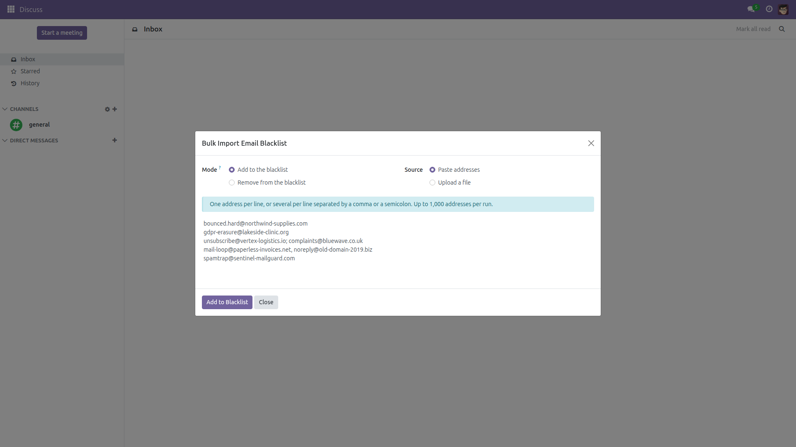
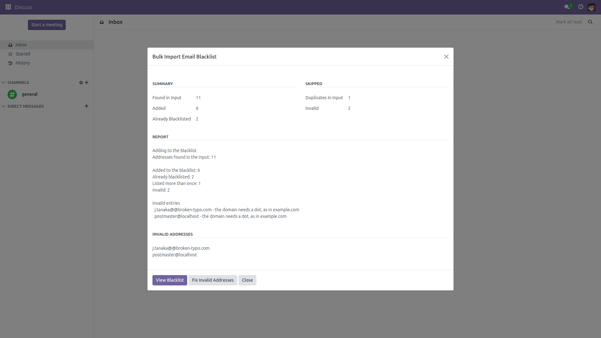
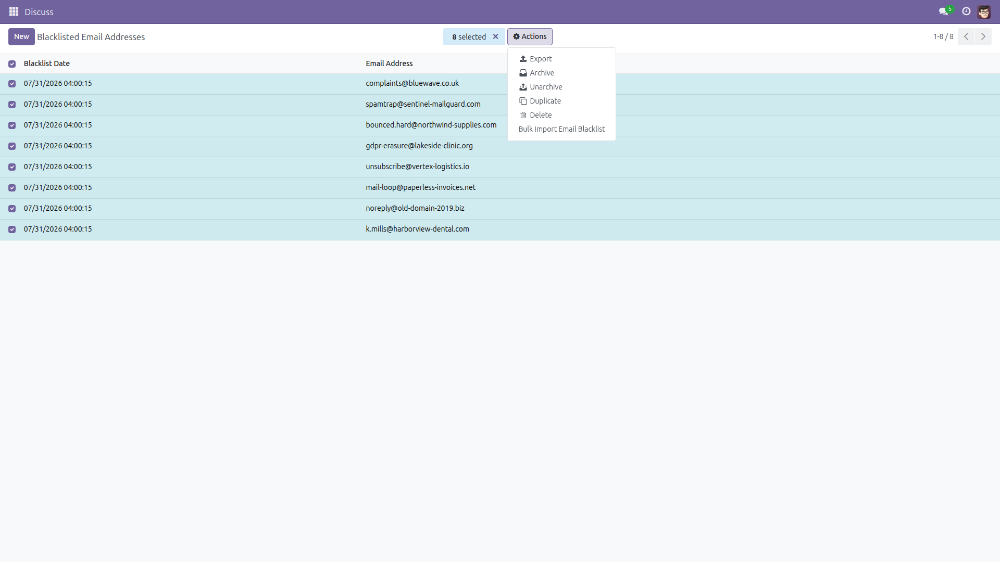

Blacklist hundreds of addresses in one run
Odoo's Email Blacklist screen accepts one address at a time. After a bounce
report, an abuse complaint export or a GDPR erasure request, that means pasting the
same form over and over. This module adds a bulk wizard: paste the list or upload the
file, choose whether you are adding or removing, and get a per-address report of what
actually happened.
What it does
- Two inputs. Paste addresses (one per line, or several per line separated by
a comma or a semicolon), or upload a
.csv / .txt file.
- Two modes. Add to the blacklist or Remove from the blacklist.
Add is the default; remove asks for confirmation before it runs.
- Real normalization. Stray whitespace, mixed case and
Name <address@example.com> forms are handled, and every address
goes through Odoo's own mail.blacklist helpers, so the standard chatter
entry is logged on each blacklist record exactly as if you had typed it by hand.
- An honest report. Added, already blacklisted, removed, not blacklisted,
listed more than once, and invalid with the reason for each one.
- The rejects come back. Invalid entries are handed back as plain text, and one
button reloads them into the wizard so you can fix and re-submit just those.
- Nothing can derail a run. Each address is processed inside its own database
savepoint: a single failing row is reported and the rest of the list still imports.
- A stated limit. Up to 1,000 addresses per run. If your input is longer, the
wizard processes the first 1,000 and tells you on screen that it truncated.
What it never does
- It never deletes a blacklist entry. "Remove" archives it, which is Odoo's own
un-blacklist behaviour, so the address keeps its history.
- It never creates a blacklist row for an address you asked to remove that was not
blacklisted — that address is simply reported as "not blacklisted".
- It never touches contacts, leads, mailing lists or any other record. Only
mail.blacklist is written.
- It never bypasses access rights. The wizard is restricted to Settings
administrators, the same group Odoo requires for the blacklist itself.
Screenshots
1. Paste the addresses and pick the mode.

2. Read the per-address result.

3. Also reachable from the blacklist list view.

Installation
- Copy the
mail_blacklist_bulk_import folder into your Odoo add-ons path.
- Restart the Odoo service.
- Open Apps, click Update Apps List, search for
Bulk Import Email Blacklist and press Install.
- The only dependency is
mail, which every Odoo database already has.
Configuration
- There is nothing to configure — the module works as soon as it is installed.
- Access is limited to the Settings administrator group
(
base.group_system). Grant that group to anyone who should be able to
run the wizard; no other setting controls it.
- The menu sits next to Odoo's own blacklist screen, under
Settings › Technical › Discuss › Blacklist Bulk Import.
Odoo's whole Technical menu — including the standard
Blacklisted Email Addresses screen — is only visible with
developer mode enabled, so the same applies here.
- If Email Marketing is installed, no developer mode is needed: open
Email Marketing › Configuration › Blacklisted Email Addresses,
tick any row and use Actions › Bulk Import Email Blacklist.
Usage
- Go to Settings › Technical › Discuss › Blacklist Bulk Import
(or open Blacklisted Email Addresses, select any row and use
Actions › Bulk Import Email Blacklist).
- Choose the mode: Add to the blacklist or Remove from the blacklist.
- Choose the source: paste the addresses in the text box, or switch to
Upload a file and pick a
.csv or .txt file. In a CSV,
the first cell of each row containing an @ is used, and a leading header
row called email, e-mail or address is ignored.
- Press Add to Blacklist (or Remove from Blacklist, which asks for
confirmation first).
- Read the summary. If some entries were invalid, press Fix Invalid Addresses to
reload only those into the wizard, correct them and run again.
- Press View Blacklist to check the result in the standard Odoo screen.
Good to know
- An address is rejected when Odoo cannot normalize it, or when its domain has no dot
(
user@localhost is refused on purpose). The reason is printed next to
the address.
- Addresses repeated inside one input are counted once and reported as
"listed more than once" — they are not errors.
- Re-adding an address that was previously un-blacklisted reuses the existing archived
record instead of creating a second row.
- CSV files with several columns are supported, but an address that contains a comma
inside a quoted display name is best pasted as plain text instead.
- A run reads at most 1 MB of pasted text or uploaded file; anything larger is
refused with a message rather than parsed.
- Tested on Odoo 14.0, 15.0, 16.0, 17.0, 18.0 and 19.0, Community and Enterprise.